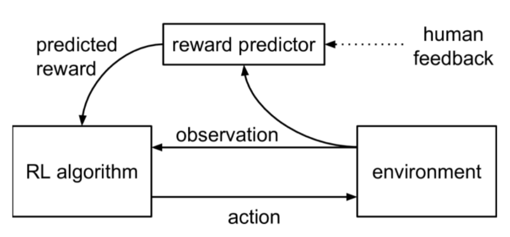
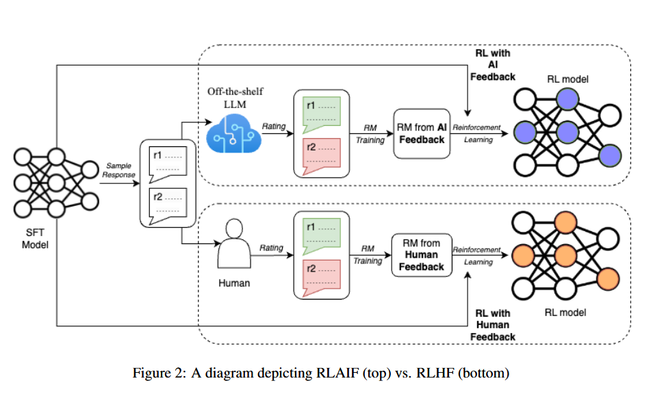
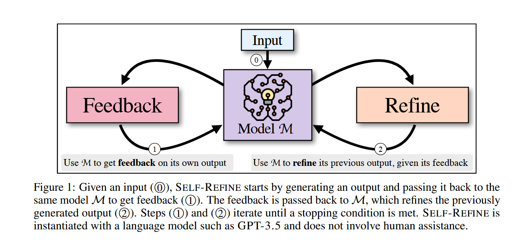
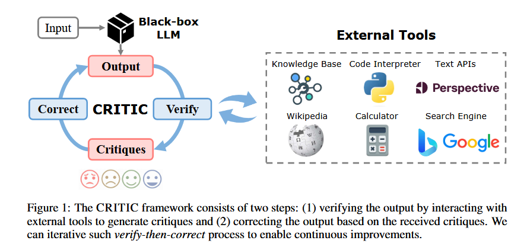

目的
预训练之后的模型就是next token prediction（文本续写），预测需要微调才能够使其的回答符合人类的期望。
将生成和强化学习结合起来，强化学习通过奖励函数直接或间接地为模型提供有监督的判定标准。因此，在大模型中引入强化学习可以提升其判断能力。
- 最新大模型反思
- 用强化学习做
- 过程奖励
- 蒙特卡洛树
论文
RLHF
英文名称：Deep Reinforcement Learning from Human Preferences 中文名称：从人类偏好中进行深度强化学习 论文代码：None 机构作者：OpenAI 发表日期：2023-2-17 目 的：为了解决强化学习系统在与真实世界环境交互时需要理解复杂目标的问题。 方 法：研究使用了以非专家人类偏好为基础的目标定义方法，将轨迹片段进行比较。通过这种方法，在没有访问奖励函数的情况下，成功地解决了包括 Atari 游戏和模拟机器人运动在内的复杂强化学习任务。与环境交互时，只需对代理机器人与环境进行少于 1% 次数的反馈。 实验结果：实验结果表明，该方法可以降低人工监督成本，并能够实际应用于最先进的强化学习系统中。此外，该方法还具有很大灵活性，在仅使用大约一小时的人工时间内就能成功训练出复杂且新颖的行为。这些行为和环境比以往任何从人类反馈中学到的都更加复杂。
依赖于人类标注的偏好，确定人类更倾向于接受机器人的A回答还是B回答。

三个步骤进行更新：
- 策略与环境互相作用，生成一组轨迹。使用传统的强化学习算法更新参数，以最大化预测奖励的总和
- 从上一步生成的轨迹选取成对判断O1和O2，发送给人类进行反馈
- 使用监督学习优化奖励模型参数，以适应人类反馈的结果
RLAIF
英文名称：RLAIF: Scaling Reinforcement Learning from Human Feedback with AI Feedback 中文名称：RLAIF：利用AI反馈扩展强化学习 论文代码：None 机构作者：Google Research 发表日期：2023-09-01 目 标：使用 RLAIF (RL from AI Feedback (RLAIF)) 方法替代 RLHF 方法，以提高大型语言模型与人类偏好的一致性。 方 法：方法包括使用 RLAIF 方法，利用现成的大型语言模型生成偏好，比较不同任务下 RLAIF 与 RLHF 的性能，以及直接提示语言模型得分的实验。 实验结果：实验结果表明，在摘要、有用对话生成和无害对话生成任务中，RLAIF 与 RLHF 相比表现出相当或更好的性能。
使用机器反馈的强化学习来替代人工反馈的强化学习。
这里有两种方法：
- 蒸馏RLAIF
- 首先使用LLM为任务标记偏好
- 这些标记被用来训练一个奖励模型RM，其生成的奖励分数的Softmax应用交叉熵损失
- 生成了软标签（0.4，0.6）
- 将RM分数转为概率分布
- 以此作为奖励训练策略模型
- 直接RLAIF
- 直接使用LLM反馈作为RL中的奖励信号
- LLM提示1~10直接评价生成的质量
- 计算每个分数标记在1~10之间的可能性
- 可能性被归一化为概率分布
- 以此作为奖励训练策略模型
不足：RLAIF 在 RLHF 没产生幻觉时可能产生幻觉，而 RLHF 产生的幻觉看起来更合理。另外，RLAIF 有时会产生比 RLHF 更不连贯或不符合语法的摘要。

SPO
英文名称：A Minimaximalist Approach to Reinforcement Learning from Human Feedback 中文名称：一种极简极大化的强化学习方法：来自人类反馈的学习 论文代码：None 机构作者：Google Research 发表日期：2024-01-0 发表机构：ICML 2024 目 标：提出一种基于模型自我对弈的强化学习算法 方 法：构建自我对弈偏好优化（SPO）算法，不需要训练奖励模型，也不需要不稳定的对抗训练，因此实施起来相当简单。通过单一代理自我对弈来计算最优策略，采样多条轨迹，让评价者比较并使用胜利比例作为奖励。 实验结论：在连续控制任务中，SPO 算法比基于奖励模型的方法学习更高效，同时对于实践中经常出现的不可传递和随机偏好具有鲁棒性。
"Minimax Winner" 是博弈论中的一个概念，指的是在最坏情况下尽量最大化自己的收益。在这里将偏好学习视为一种零和博弈。
针对同一个问题生成多种答案，然后让模型选择最佳答案。选择过程实际上是让模型根据已有知识进行思考和推理，以反映大多数人的偏好，并选择更合逻辑，并使用获取到的数据对模型进行训练。
- 引言RLHF 认为有潜在的奖励函数，就等价于假设存在一个总的顺序，A≻B,B≻C⇒A≻C（传递）。然而，心理学告诉我们实际人类决策的内容是相互矛盾的（石头剪刀布）。即使人们认为一个人的偏好是可传递的，但在评估者群体中，很难满足传递性。此外，如果两个选项得分相似，则选择任一条都不能满足中一半评估者。作者提出了一种方法：从智能体中抽取多个轨迹，并要求评分者或偏好模型比较每对，并将奖励设置为轨迹的胜率。将这种方法称为 SPO。
该方法不再将选择 A 与 B 相比较，而是同时考虑选项 A 和其他多个方法（BCDE...），计算 A 在这些方法中的位置作为其相对客观分值，以更准确地学习选项的好坏，并做出更好的决策。
Self-Refine
英文名称：Self-Refine: Iterative Refinement with Self-Feedback 中文名称：自我精炼：具有自我反馈的迭代精炼 论文代码：https://selfrefine.info/ 机构作者：Language Technologies Institute, Carnegie Mellon University，Allen Institute for Artificial Intelligence，NVIDIA，Google Research, Brain Team 发表日期：2023-05-25 发表机构：NeurlPS 2023 目 标：改进模型输出 方 法：给定一个输入序列，SELF-REFINE生成一个初始输出，对输出提供反馈，并根据反馈改进输出。SELF-REFINE在反馈和细化之间迭代，直到满足所需的条件。SELF-REFINE依赖于一个合适的语言模型和三个提示（用于初始生成、反馈和细化），不需要训练。 实验结论：使用最先进的LLM（GPT-3.5和GPT-4）在7个不同的任务中评估SELF-REFINE，从对话响应生成到数学推理。在所有评估的任务中，使用SELF-REFINE生成的输出比使用传统一步生成的相同LLM生成的输出更受人类和自动指标的青睐，任务性能平均提高了约20%。

Reflexion
英文名称：Reflexion: Language Agents with Verbal Reinforcement Learning 中文名称：反思：具有言语强化学习的语言智能体 论文代码：https://github.com/noahshinn/reflexion 机构作者：Noah Shinn(Northeastern University) 发表日期：2023-05-20 v1 发表机构：NeurlPS 2023 目 标：优化模型决策 方 法：通过语言反馈而不是更新权重来强化语言代理。利用大模型及其周边方法构造了角色的行为、对结果的评价、当不能达成目标时，利用大模型来反思执行过程中具体哪一步出了问题，并将其作为反思存储。这样就构造了基于当前环境的短期存储，和基于反思的长期存储，结合二者使模型在未来做出更好的决策。 实验结论：Reflexion达到了91%pass@1在HumanEval编码基准测试中，其准确率超过了之前最先进的GPT-4，达到了80%。我们还使用不同的反馈信号、反馈合并方法和试剂类型进行消融和分析研究，并提供它们如何影响性能的见解。
传统的调优主要是通过训练调整网络参数，而文中提出的方法则是“分析”错误，形成反思的“文字”并保存，在之后的决策中，将其作为上下文以帮助决策。
提出了一种不训练模型的方法。该方法通过记录模型在环境中的探索过程，并在模型失败时，利用大模型的思考内容推理出问题所在，并将其记录下来。同时，该方法利用之前的经验和上下文环境生成短期记忆，并通过对过去的反思生成长期记忆。结合了长短期记忆，在模型外围构建辅助方法，而不需要对模型进行调参。最终实验结果表明，该方法在各个实验中将基准得分提升了约 10%，可视为非常有效的适应环境的方法。
与传统方法相比，Reflexion 具有以下优点：
- 更为轻量，不需要对 LLM 进行微调
- 相比于难以进行准确信用分配的标量或向量奖励，它允许更细致的反馈
- 允许更明确和可解释的情节性记忆形式
- 为未来的决策提供了更明确的行动提示
其缺点是：
- 依赖于 LLM 的自我评估能力（或启发式方法）
- 无法保证成功
CRITIC
英文名称：CRITIC: Large Language Models Can Self-Correct with Tool-Interactive Critiquing 中文名称：批评家：大型语言模型可以通过工具交互批评进行自我纠正 论文代码：https://github.com/microsoft/ProphetNet/tree/master/CRITIC. 机构作者：Tsinghua University 2Microsoft Research Asia, 3Microsoft Azure AI 发表日期：2024-02-21 发表机构：ICLR 2024 目 标：解决不一致，产生幻觉以及输出有毒内容等问题 方 法：通过引入了一个名为CRITIC的框架，该框架允许LLM（本质上是“黑匣子”）以类似于人类与工具交互的方式验证和逐步修改自己的输出。更具体地说，从初始输出开始，CRITIC与适当的工具进行交互，以评估文本的某些方面，然后根据在此验证过程中获得的反馈修改输出。 实验结论：对不同任务和LLM的实验一致表明了CRITIC的有效性、通用性和互操作性。此外，我们揭示了LLM在自我验证中的不可靠性，强调了外部工具交互解决这一问题的潜力。
CRITIC与搜索引擎和代码解释器等外部工具交互，以验证初始输出的预期方面，并随后根据验证的批评修改输出。然后可以重复此验证过程以确保正确持续的输出增强。与依赖于昂贵注释或特定任务培训的方法相反，CRITIC利用情境学习和工具交互，使用LLM本身熟练地识别和纠正不满意的行为。这种独特的方法使CRITIC既实用又易于访问，只需要访问文本到文本工具API和一些演示。

CRITIC框架包括两个步骤：（1）通过与外部工具交互生成评论来验证输出，（2）根据收到的评论纠正输出。我们可以迭代这种验证，然后纠正流程，以实现持续改进。